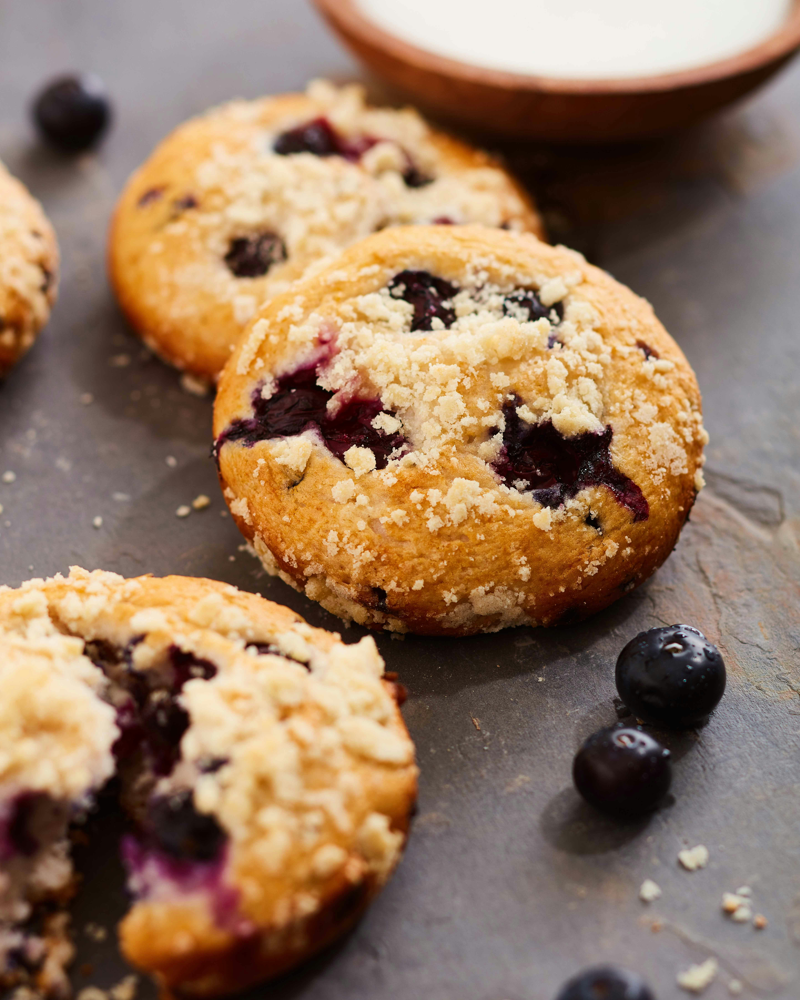

Pick Me Up Blueberry Cookies

Got the blues?
But feeling like some jazz? Try out these delicious blueberry cookies with a soft chew and comforting cream cheese frosting.
Overview of Cookie Ingredients
- 1/2 cup of salted butter
- 3/4 cup of brown sugar
- 1 egg
- 1 tsp vanilla
- 1 cup + 2 tablespoons flour
- 1/3 cup of old fashioned oats
- 1/2 tsp baking soda
- 1/4 tsp salt
- 1 cup of fresh blueberries
Overview of Frosting Ingredients
- 3 ounces of softened cream cheese
- 1 tbsp butter
- 1 1/2 cups of powdered sugar
- 1 tsp vanilla
Instructions
- Preheat oven to 350°F and line baking sheets with parchment paper.
- Cream the butter and brown sugar until light and fluffy.
- Beat in the egg and vanilla.
- Add the flour, oats, baking soda and salt and mix well.
- Gently stir in the blueberries.
- Use a medium-sized cookie scoop to form 12-15 cookies.
- Bake for 10-12 minutes, or until golden brown; let cool completely on a wire rack.
- Make the frosting: Beat the cream cheese and butter until fluffy. Beat in the powdered sugar and vanilla until smooth.
- Spread liberally over the cooled cookies.
Recipe by: Kelsey @ Dance Around The Kitchen